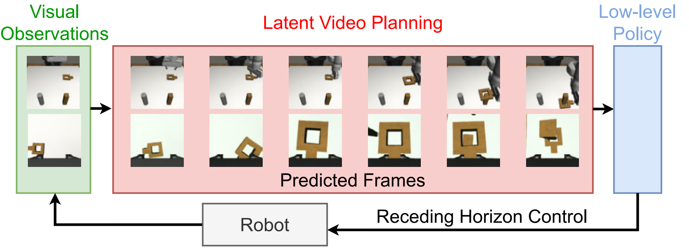
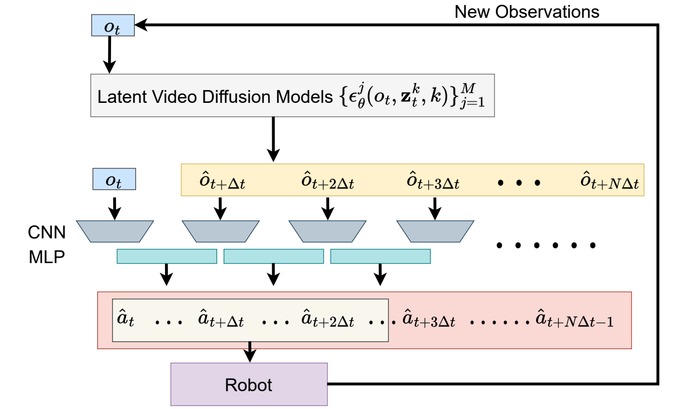
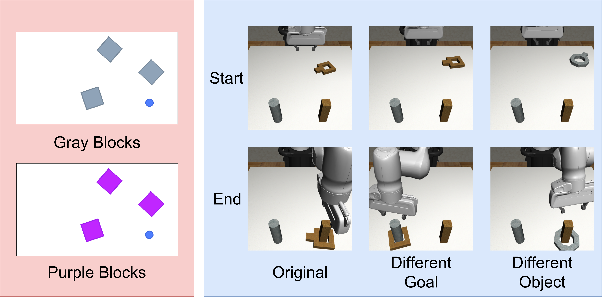
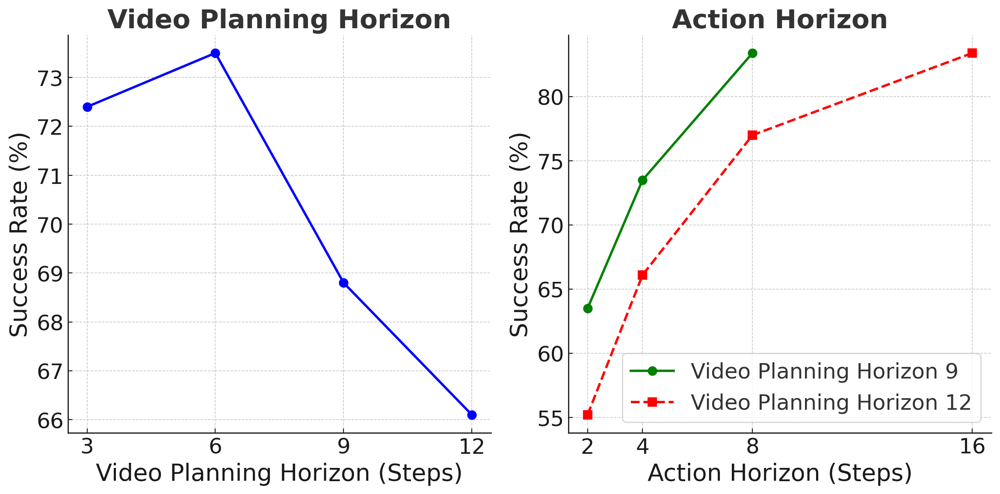
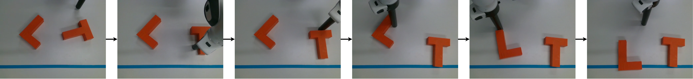

VILP: Imitation Learning with Latent Video Planning
中文精读报告：VILP 把视频生成模型放进 imitation learning policy 中，但重点不是生成更大的 RGB 视频，而是在 latent 空间快速生成未来机器人视频，并把视频计划实时转成动作，实现 receding horizon planning。
目录
1. 论文速览
| 论文要解决什么 | 已有视频规划机器人方法通常在像素空间生成视频，速度慢，难以实时 replanning；长 horizon open-loop 执行容易累积误差。VILP 要解决的是：如何把视频生成作为机器人策略的一部分，同时足够快、能支持 receding horizon，并能利用视频数据减少对高质量动作标注数据的依赖。 |
|---|---|
| 作者的方法抓手 | 使用 VQGAN 把多视角/RGBD 图像压缩到 latent space，在 latent 中训练 3D-UNet DDIM 视频扩散模型；用视觉观测通过 ResNet-18 编码并用 cross-attention 全局条件化视频生成；再用 goal-conditioned low-level policy 将相邻预测帧映射成动作序列，只执行前 \(N_e\) 步并反复重规划。 |
| 最重要的结果 | VILP 相比 UniPi 显著降低训练显存与推理时间，并在多个任务上保持或提升视频质量与策略成功率。例如 Arrange-Blocks-Hybrid 中 VILP-8 达到 84.0/80.4 的 max/mean 成功率，而 UniPi-16 仅 18.0/13.2；真实 Real-Arrange-Blocks 中 VILP-16 完成两块排列 7/15，UniPi-4/16 为 0/15，且 VILP 推理时间 0.238s 快于 UniPi-16 的 1.422s。 |
| 阅读时要注意的点 | VILP 的优势主要来自 latent planning 的速度、cross-attention 条件机制、多视角对齐与 receding horizon；但它并不是一个完全免动作数据的方法，视频到动作仍需要低层策略训练。读实验时要分清“只评视频规划”的 FID/FVD/速度实验和“完整 policy rollout”的成功率实验。 |

2. 背景与问题设定
为什么视频规划适合机器人
视频生成模型天然学习时间一致性和未来演化：给定当前观测，它可以“想象”机器人执行任务后的未来帧。若这些未来帧能被转成动作，就形成一个 video planning policy。相比动作数据，视频更容易采集和扩展，因此视频生成可能帮助机器人进入更可扩展的数据范式。
作者提出的三个关键问题
- Receding horizon planning：视频生成太慢时只能 open-loop 执行长视频，误差累积严重。问题是能否把视频规划加速到接近实时。
- Bridging video and action：视频模型可用无动作视频训练，但最终机器人需要动作。问题是能否用较少或非完全同分布的动作数据建立 video-to-action 映射。
- Robotic data uniqueness：机器人数据常有多视角、RGBD、多模态动作分布。视频规划策略必须适配这些特性，而不是照搬单视角通用视频生成。
3. 方法细节
3.1 视频数据格式
论文把视频数据写成 \(\mathcal{D}^{v}=\{(o_0^i,o_1^i,\ldots,o_{T_d^i}^i)\}_{i=1}^{E}\)。其中 \(o\) 是多视角或 RGBD 图像的组合：\(o=\{f^j\}_{j=1}^{M}\)，\(M\) 是视角数量。也就是说，VILP 从一开始就把多相机输入作为常见机器人数据格式处理。
3.2 VQGAN 压缩到 latent space
给定图像 \(f\in\mathbb{R}^{\tilde{H}\times\tilde{W}\times\tilde{C}}\)，VQGAN encoder \(\mathcal{E}\) 将其压缩为 \(z=\mathcal{E}(f)\in\mathbb{R}^{H\times W\times C}\)，decoder \(\mathcal{D}\) 可从 \(z\) 重建图像。RGB 图和深度图都可以压缩；VQGAN 训练好后固定，不随 diffusion 训练更新。
3.3 Latent video diffusion planner
从视频中采样未来 \(N\) 帧：
$$\mathbf{f}_t=[f_{t+\Delta t},f_{t+2\Delta t},\ldots,f_{t+N\Delta t}]$$
压缩得到 latent 序列：
$$\mathbf{z}_t=[z_{t+\Delta t},z_{t+2\Delta t},\ldots,z_{t+N\Delta t}]$$
视频扩散模型在 latent 序列上训练，目标为：
$$\mathcal{L}(\theta)=\mathbb{E}_{\mathbf{z}_t^0,\epsilon^k,k}\left[\|\epsilon^k-\epsilon_\theta(\mathbf{z}_t^k,k)\|^2\right]$$
网络使用带 3D convolution 的 UNet，以同时捕获空间和时间特征。为了让它成为 planner，还要条件化当前观测 \(o_t\)，学习 \(p(\mathbf{z}_t|o_t)\)。

3.4 观测条件化与多视角生成
VILP 的 conditioning 分三步：
- 用 modified ResNet-18 将每个视角观测编码为低维向量；不同视角使用不同 encoder，深度图重复三次当作三通道输入。
- 把所有视角 embedding 拼接成 \(c_t\)，通过 cross-attention 注入 3D UNet 中间层：\(\text{Attention}(Q,K,V)=\text{softmax}(QK/\sqrt{d})V\)。
- 每个视角训练一个 diffusion model 生成该视角视频，同时融合多视角 observation embedding，使不同视角的生成视频时间对齐。
3.5 从预测视频到动作
低层策略使用相邻预测帧产生动作序列：
$$\hat{\mathbf{a}}_{t+n\Delta t}=\pi(\hat{o}_{t+n\Delta t},\hat{o}_{t+(n+1)\Delta t}),\quad n=0,\ldots,N-1$$
\(\pi\) 由两个 CNN encoder 和一个 MLP head 构成。它把两个相邻预测观测映射为连续动作段 \([a_{t+n\Delta t},\ldots,a_{t+(n+1)\Delta t-1}]\)。执行时不执行全部生成动作，而是只执行前 \(N_e\) 步，然后重新观测、重新生成、重新动作解码。这就是 receding horizon control。

4. 实验与结果
4.1 视频规划实验
作者在 Move-the-Stack、Push-T、Towers-of-Hanoi 上只评估视频规划，不涉及 policy rollout。使用 9:1 episode split，90% 训练，10% unseen 测试，指标包括 FID、FVD、单次推理时间。VILP 与 UniPi 都使用 DDIM，方法名后的数字代表 denoising steps。
| 任务 | 关键观察 |
|---|---|
| Move-the-Stack | UniPi-64 可取得最佳 FID/FVD，但时间为 2.5s；VILP-4 时间 0.058s，质量接近且快很多。 |
| Push-T | VILP 在少步数下显著优于 UniPi，VILP-8 FID 14.65，VILP-16 FVD 447.56，UniPi-16 FVD 744.06。 |
| Towers-of-Hanoi | VILP-8/16 的 FID/FVD 优于 UniPi，对长时序结构任务也能保持更好的质量/速度权衡。 |

4.2 训练显存与速度
VILP 在 latent 空间生成，训练显存远低于 UniPi。例如 Arrange-Blocks 中 VILP 生成 5 帧 96x160 仅需 10.0GB，而 UniPi 同设置需 82.5GB；Towers-of-Hanoi 中 VILP 8.7GB，UniPi 68.2GB。推理速度方面，VILP 在多个设置中能达到 0.058s 到 0.231s 级别，支撑近实时/实时 replanning。
4.3 完整策略 rollout：Nut-Assembly 与 Arrange-Blocks
| 任务 | Diffusion Policy | VILP | UniPi | 结论 |
|---|---|---|---|---|
| Nut-Assembly-Small | 28.0/24.3 | 26.7/23.3 | 20.0/17.6 | 小动作数据时 VILP 接近 Diffusion Policy，优于 UniPi。 |
| Nut-Assembly-Hybrid | 48.0/43.1 | 56.7/53.2 | 35.3/27.2 | 加入 off-target / hybrid 动作数据后，VILP 最强。 |
| Arrange-Blocks-Small | 8.9/5.9 | 46.0/40.4 | 14.7/8.9 | 视频数据对任务结构提供了大量信息。 |
| Arrange-Blocks-Hybrid | 22.7/17.1 | 84.0/77.6 | 18.7/16.2 | VILP 在该设置下优势最明显。 |
表中数值为 max/mean success rate。这个实验支撑作者的主张：当视频数据较多但高质量动作标注有限或较杂时，VILP 能利用视频生成模型中的任务知识。

4.4 与其他 imitation learning 方法比较
| 任务 | UniPi | DiffusionPolicy-C | DiffusionPolicy-T | LSTM-GMM | IBC | VILP w/o low dim. | VILP w/ low dim. |
|---|---|---|---|---|---|---|---|
| Sim Push-T | 82.0 | 84 | 66 | 54 | 64 | 82.6 | 88.0 |
| Can-PickPlace | 37.4 | 97 | 98 | 88 | 1 | 95.7 | 92.2 |
VILP 在 Sim Push-T 上最好，作者认为这说明它能表示多模态动作分布；在 Can-PickPlace 上接近 Diffusion Policy-C/T，说明视频规划路线并非只在低数据场景有意义。
4.5 模块消融与 horizon 消融
模块消融显示，conditional concatenation 明显弱于 VILP 的 cross-attention / global conditioning；多视角 fusion 对 Can-PickPlace 很关键。horizon 消融显示，视频规划 horizon 和 action horizon 不能盲目增大：太短看不到足够未来，太长训练和推理成本高且生成更难。作者给出的经验较优组合是 video horizon 6 + action horizon 8，或 video horizon 12 + action horizon 16。

4.6 真实 Real-Arrange-Blocks
真实任务要求 Franka Panda 将 L block 和 T block 排成蓝线上的 “LT” 配置。初始位置和朝向随机，动作空间为 x/y 方向 delta motion，使用 220 条人类示范训练。结果：VILP-16 完成两块排列 7/15，另有 6/15 完成一块；UniPi-4 和 UniPi-16 两块/一块均为 0/15。推理时间 VILP-16 为 0.238s，UniPi-16 为 1.422s。

5. 实现与图表要点
关键实现选择
- 视频生成使用 DDIM；VILP-4、VILP-8、VILP-16 分别代表 4/8/16 denoising steps。
- 视频 planner 的 UNet 用 3D convolution 捕获时空关系。
- 观测 encoder 与 VQGAN compression encoder 职责不同：前者用于条件化，后者用于低方差、可重建的 latent 表示。
- 多视角生成采用每视角独立 diffusion model，同时通过多视角 embedding 融合保证时间对齐。
- UniPi 对比中作者实现了相同 low-level policy，以尽量公平比较 video planner 差异。
论文没有独立附录
arXiv 源码中没有额外 appendix 文件；全部方法、实验、讨论都在 `vilp.tex` 中。本报告已整合源码中的全部主要图表和实验表。
6. 复现与实现要点
最小复现路径
- 准备多视角/RGBD 视频数据 \(\mathcal{D}^{v}\)，以及少量带动作标签的数据用于 low-level policy。
- 训练 VQGAN autoencoder，将每帧压缩到 latent；训练后冻结。
- 按 \(N,\Delta t\) 从视频中采样未来帧序列，并编码为 \(\mathbf{z}_t\)。
- 训练 conditional latent video diffusion：输入当前观测 \(o_t\)、noisy latent video、denoising step，预测噪声。
- 用 modified ResNet-18 编码不同视角观测，并通过 cross-attention 注入 3D UNet。
- 训练低层 goal-conditioned policy \(\pi(\hat{o}_t,\hat{o}_{t+\Delta t})\rightarrow\hat{\mathbf{a}}\)。
- 部署时生成未来视频 latent，解码或直接用于相邻帧动作预测，只执行前 \(N_e\) 步并循环重规划。
7. 分析、局限与边界
这篇论文最有价值的地方
它把“视频生成作为机器人 planner”从一个较慢的概念路线推进到可实时重规划的工程形态。最有价值的点有两个：第一，latent video diffusion 使视频规划速度足够快，可以支持 receding horizon，而不是长 open-loop；第二，它清楚展示了视频数据和动作数据可以部分解耦，视频模型负责学习任务未来演化，少量/混合动作数据负责桥接视频到动作。
结果为什么站得住
- 作者分别评估了视频规划质量、训练显存、推理速度和最终策略成功率，覆盖了“生成是否好”和“控制是否有效”两层问题。
- 和 UniPi 的比较尽量使用相同 low-level policy 与 U-Net 基础设置，突出 latent planning 和 conditioning 的差异。
- 策略 rollout 不只在模拟中验证，也有真实 Real-Arrange-Blocks；真实任务中速度差异直接影响闭环控制质量。
- 消融实验支持核心设计：conditional concatenation 更弱，多视角 fusion 有用，horizon 选择存在可解释 trade-off。
主要局限
- 仍需要动作标签：VILP 减少对高质量 task-specific action data 的依赖，但 video-to-action 低层策略不是无监督获得的。
- 任务 horizon 仍有限：实验主要是短到中等长度操作；更长的任务级多模态规划仍是未来工作。
- 每视角训练 diffusion 增加复杂度：多视角对齐有效，但每个视角单独训练模型会增加系统维护成本。
- 生成伪影没有完全解决：作者指出小伪影未明显影响实验，但复杂接触任务中伪影可能误导低层策略。
- 强依赖特定分辨率和任务设置：实时性是在 96x160、80x80 等较低分辨率下得到的，迁移到高分辨率或更多视角要重新评估。
阅读时可追问的问题
- 低层策略到底从预测视频中学到了多少，和直接 diffusion policy 相比，何时值得多训练一个 video planner？
- VILP 对预测视频的视觉质量多敏感？哪些伪影会影响动作，哪些不会？
- 真实任务中 7/15 的完整成功率说明可行，但离稳定部署还远，主要失败模式是什么？
- 如果用更强的 pretrained video model 替代从头训练的 latent diffusion，能否进一步降低视频数据需求？
- 能否训练一个跨任务、跨机器人、跨视角的统一 video-to-action mapper，真正实现作者讨论中的更通用路线？